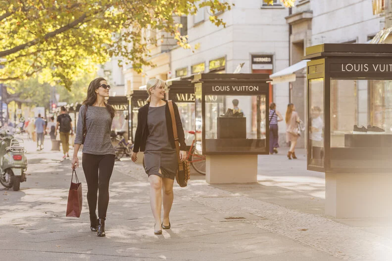
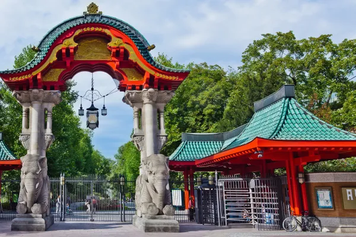

Was kann man in Berlin machen? Diese Frage stellen sich wohl so einige vor ihrer Reise in die
Hauptstadt. Damit Sie bei Ihrer Reiseplanung schnell Antworten auf diese und viele weitere Fragen
finden, haben wir für Sie 5 Attraktionen zusammengestellt, die Sie bei Ihrem Kurzurlaub in Berlin
unternehmen können. Darunter sind viele bekannte und einige etwas weniger bekannte Orte,
Sehenswürdigkeiten und Aktivitäten, die Ihren Urlaub versüßen werden. Buchen Sie einfach einen
Wochenend-Trip nach Berlin und lassen Sie sich von der Energie und Geschichte dieser Weltmetropole
inspirieren!
Top 1: Kurfürstendamm

Auf dem Bild ist der Kurfürstendamm zu sehen.
Von der Kaiser-Wilhelm-Gedächtniskirche auf dem Breitscheidtplatz bis zu Berlins nobler Wohngegend
am
Halensee erstreckt sich der Kurfürstendamm: Berlins beliebteste Shoppingmeile, an der sich die nobelsten
Marken und die großen Modeketten angesiedelt haben. Auch das KaDeWe, das größte Kaufhaus auf dem
europäischen Festland, befindet sich an der Verlängerung des Kurfürstendamm, der Tauentzienstraße. Und
für kleine Berlin-Gäste ist der Zoo Berlin spannend, Deutschlands ältester Zoo.
Top 2: Gedenkstätte und Dokumentationszentrum Berliner Mauer
Das Dokumentations Zentrum in der Bernauer Straße umfasst ein breites Spektrum an Informations- und
Vertiefungs- angeboten zur Geschichte der Berliner Mauer. Ausgehend von den Ereignissen in der Bernauer
Straße werden in unterschiedlichen Medien allgemeine Informationen zu den historisch-politischen
Hintergründen sowie vertiefende Details zur Berliner Mauer bereitgestellt. Sie werden in deutscher und
englischer Sprache präsentiert.
Top 3: Zoologischen Garten

Auf dem Bild ist der Berliner Zoo zu sehen.
Betreten Sie den Zoologischen Garten in Berlin über das legendäre Elefantentor und lassen Sie sich für
einen Tag in eine bunte Tierwelt entführen. Der Berliner Zoo ist über 150 Jahre alt und der
artenreichste Zoo des Planeten. Über 20.000 Tiere bestaunen die Gäste auf dem Gelände zwischen
Tiergarten und Kurfürstendamm. Hier finden Sie den perfekten Ausflugsort für Ihre Kinder, die sich
zwischen Gehegen, Terrarien, Echsenhäusern und nicht zuletzt im Streichelzoo köstlich amüsieren werden.
Auf dem Zoogelände befindet sich außerdem das Aquarium Berlin, seines Zeichens eines der
beeindruckendsten Aquarien Europas. Wenn Sie die Zeit haben, gönnen Sie sich einen ganzen Tag im Zoo und
Aquarium und machen Sie Ihren Aufenthalt in Berlin zu einem unvergesslichen Erlebnis!
Top 4: Improtheater
Probieren Sie einfach mal etwas Neues und besuchen Sie eines der Improtheater der Stadt. Als
Abwechslung zu klassischen Theatern wie der Schaubühne, Volksbühne oder dem Deutschen Theater geht es in
den Improtheatern äußerst bunt und interaktiv zu. Alle Szenen und Dialoge zwischen den Schauspielern
sind improvisiert und entstehen direkt vor den Augen der Zuschauer. Diese rufen den Darstellern Begriffe
zu, stimmen über den Inhalt der nächsten Szene ab oder küren am Ende der Show per Abstimmung die
Darstellung, die ihnen am meisten gefallen hat.
Top 5: Berliner Unterwelten
Auf dem Bild ist die Berliner Unterwelten zu sehen.
In unmittelbarer Nähe zur Friedrichstraße, der exklusiven Einkaufsstraße in Berlin-Mitte, befindet sich
einer der schönsten Plätze Berlins: der Gendarmenmarkt. Mit dem von Schinkel entworfenen Konzerthaus
sowie
dem Deutschen Dom und Französischen Dom stehen hier drei architektonische Höhepunkte der Hauptstadt.